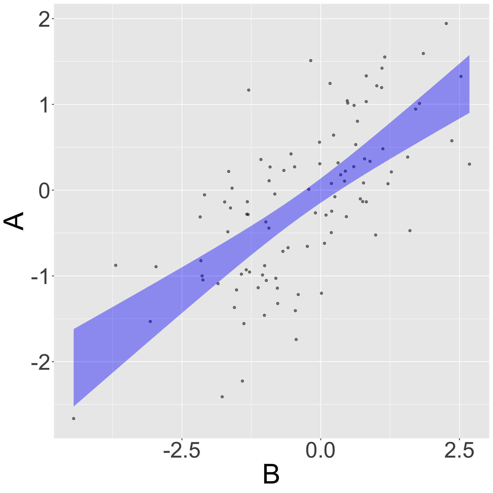

Our_data |>
point_plot(
B ~ A,
annot = "model") |>
big_text()Confounding & Causality
Class I
QR2 in-class notes, Tues. Feb. 25
Confounding and causality
We are thinking of intervening, e.g. buying new running shoes for an important race. We want to assess the likely implications for this intervention, which requires us to draw conclusions relating to causality.
- The intervention will correspond to our setting a causal explanatory variable, that is, a variable whose value we believe produces the desired output.
- We are interested in the effect size of that explanatory variable on the response variable.
- For us, “effect size” is the same as “model coefficient.” For pros, effect size is the partial derivative of the model function w.r.t. the explanatory variable.
Questions:
- Can we always treat a model coefficient in a causal way?
- How can we know how best to choose covariates?
- Where does experiment come into this?
- What can we do to try to make our model coefficient accurately reflect the change in outcome when we change the value of the explanatory variable of causal interest.
Spiegelhalter Ch. 4
“A proper medical trial should ideally obey the following principles:”
These are often called RCTs: Randomized Control Trials or Randomized Clinical Trials
- Controls
- Allocation of treatment
- People should be counted in the groups to which they were allocated.
- If possible, people should not even know which group they are in.
- Groups should be treated equally
- If possible, those assessing the final outcomes should not know which group the subjects are in.
- Measure everyone
- Don’t rely on a single study
- Review the evidence systematically when looking at multiple trials.
1. Controls
“If we want to investigate the effect of statins on a population, we can’t just give statins to a few people, and then, if they don’t have a heart attack, claim this was due to the pill.”
In economics, this fallacy is called post-hoc ergo prompter hoc
“We need an intervention group, who will be given statins, and a control group …” who will not be given statins.
In modeling terms, the goal is to create variation in an explanatory variable and look at how that variation appears in the response variable.
2. Allocation of treatment
“It is important to compare like with like, so the treatment and comparison groups have to be as similar as possible.”
- “Randomly assign participants to be treated or not.”
Other compare-like-with-like principles
- “If possible, people should not even know which group they are in.” Such as study is blinded
- “Groups should be treated equally”, e.g. invited for a check up at the same rate
- “If possible, those assessing the final outcomes should not know which group the subjects are in.” (4) and (6) together are double-blinded. Example: It’s often a judgement call to say what a person died of.
- “Measure everyone. Every effort must be made to follow everyone up, a people who drop out of the study might have done so because of the drugs side-effects.
3. Count people in the groups to which they were assigned.
This might sound obvious, but …
Suppose you find someone who was assigned to take statins, but didn’t. (“Non-compliance”) Should you move them to the control group. What could be wrong with doing that?
A related situation is called “pollution,” someone assigned to the control group who nevertheless takes the treatment.
How about if you measure the “reduction in LDL” and model mortality as a function of that? Spiegelhalter speaks favorably about this, but I disagree. This effectively moves a non-complier into a low-reduction group. (Instrumental variables?)
In contrast … Observational data
Two major issues
- The direction of causal flow.
- The existence of confounders.
Causal flow
We encode hypotheses about causality using diagrams with arrows.
| \(\Large A \rightarrow B\) | \(\Large A \leftarrow B\) | |
|---|---|---|
| A causes B | B causes A |
Can we use modeling to distinguish one from the other?
Try it out …
… modeling data from a simulation where we know that A causes B.
What do you see in the coefficients that gives you reason to think that one model is accurate and the other inadequate.
Or, in graphics form
Our_data |>
point_plot(
A ~ B,
annot = "model") |>
big_text()
Confounding
When a third variable influences both the outcome and the explanatory variable of interest.
abc_sim <- datasim_make(
C <- rnorm(n),
A <- C + rnorm(n),
B <- A + C + rnorm(n)
)
dag_draw(abc_sim)
Example: Running on Vapor
Nike Vapor shoes are used for one race
- Raise the issue of causality. Not practical to do an experiment: shoes cost too much and not possible to blind the experiment.
- Confounders:
- Do runners who are in a particularly expansive mood buy the shoes for one race?
- Do runners buy expensive shoes as a reward for particularly intensive training program?
- Do runners buy the shoes specifically for easy courses to ensure that they get the shortest running time possible (e.g. in order to qualify for future races)?
- Need to compare like with like. Show the four methods of analysis.
- Point out the means and CIs.
The New York Times investigates …
Modeling data from the simulation of confounding
We know that the A coefficient on B is 1.
B <- A + C
abc_sim |>
take_sample(n=100) |>
model_train(B ~ A) |>
conf_interval() |>
gt()| term | .lwr | .coef | .upr |
|---|---|---|---|
| (Intercept) | -0.2587799 | -0.00985518 | 0.2390695 |
| A | 1.4257503 | 1.61506443 | 1.8043785 |
Accuracy
Thinking in terms of accuracy, we are looking for modeling techniques that will give us, for observational or experimental data, an unbiased estimate of the effet
Review
Block 1: Data, graphics, a little bit of wrangling. Models through graphics. Show the way that confidence intervals were presented in the graphic.
Block 2: Prediction, where we introduced model training and evaluation.
Block 3: Regression, where we introduced the idea of a covariate and showed how to adjust for a covariate. But we left ambiguous when you should include a covariate.
Block 4: Precision and confidence intervals.
- How to interpret them for a single model. Easy.
- How to interpret them across many different studies: should the results from other studies color our interpretation of a specific study? Funnel plot.
Block 5: Confounding and causality
The issue at the core of this block is causality.
Clinical trials